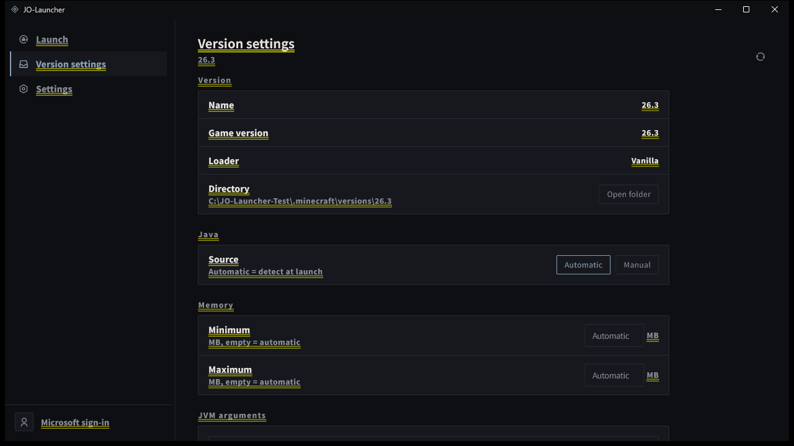

Version discovery
Scans versions/ and recognizes vanilla, Fabric, Quilt, Forge and NeoForge installations.
Open source · Windows desktop
JO-Launcher is a focused desktop launcher for Minecraft: Java Edition. It starts installations you already have, keeps the interface quiet, and stays out of the way.
Windows 10/11 · Apache-2.0 · No game files included

01 / Features
A small set of focused tools for players who already own Minecraft: Java Edition and want a quiet desktop client.
Scans versions/ and recognizes vanilla, Fabric, Quilt, Forge and NeoForge installations.
Java path, memory limits and JVM arguments are stored in jolauncher.json inside each version directory.
Choose a version, start and stop the game, and follow the live log from one screen.
Sign in with your own Microsoft account through the device-code flow. Availability depends on Mojang application approval.
Dark, light and follow-system themes, a draggable sidebar, and seven interface languages.
Tokens are kept in a local Windows DPAPI-protected file. No backend, no telemetry; delete account data from Settings.
02 / Why JO-Launcher
JO-Launcher does not download or redistribute the game. Point it at an existing .minecraft directory and launch the versions that are already there.
The goal is a focused client: fast startup, a small interface, no background services, no advertising, and no unnecessary data collection.
03 / Roadmap
Version management, Linux support and account tools are planned. The current release focuses on the launcher itself.
04 / Download
Windows builds, source archives and checksums are published on GitHub Releases. You can also build JO-Launcher from source with Flutter.